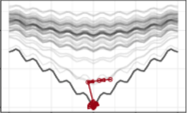

Sliceplorer: 1D Slices for Multi-dimensional Continuous Functions

CGF (2017)
Authors
Thomas Torsney-Weir, Michael Sedlmair, Torsten Möller
Materials
Abstract
Multi-dimensional continuous functions are commonly visualized with 2D slices or topological views. Here, we explore 1D slices as an alternative approach to show such functions. Our goal with 1D slices is to combine the benefits of topological views, that is, screen space efficiency, with those of slices, that is a close resemblance of the underlying function. We compare 1D slices to 2D slices and topological views, first, by looking at their performance with respect to common function analysis tasks. We also demonstrate 3 usage scenarios: the 2D sinc function, neural network regression, and optimization traces. Based on this evaluation, we characterize the advantages and drawbacks of each of these approaches, and show how interaction can be used to overcome some of the shortcomings.